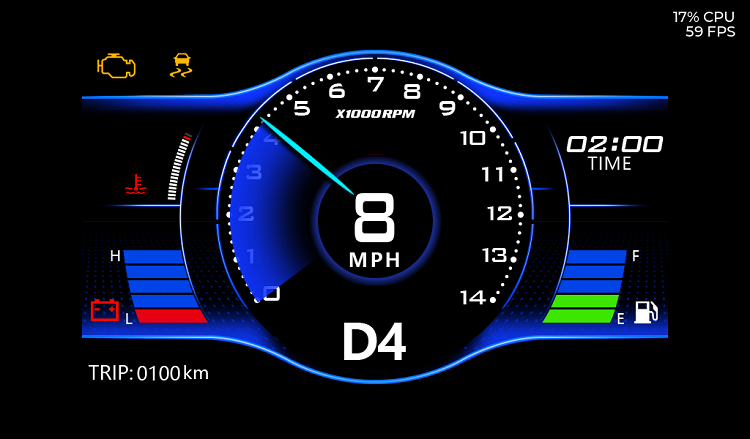
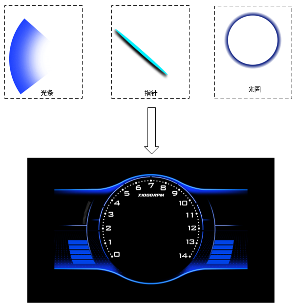
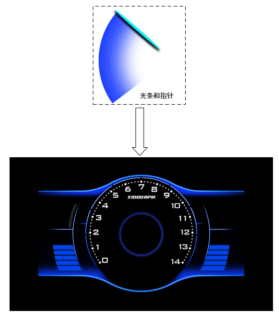

LVGL Demo
15 Jan 2024
Read time: 5 minute(s)
LVGL demo 示例目前支持下列常见的示例：
- Base Demo：LVGL 的基础演示示例，展示了如何使用 LVGL 创建基本的
UI 元素，通常用于展示 LVGL 的基本功能和使用方法，包括：
- 创建按钮并响应点击事件
- 显示文本标签
- 使用滑块调整数值
- 简单的动画效果
- Meter Demo：演示如何使用 LVGL 创建仪表盘（meter），
常用于需要显示数据变化的场景，如速度表、温度计等。功能包括：
- 创建仪表盘并添加指针
- 动态更新指针位置
- 显示刻度和标签
- 支持多种样式和颜色
- Widgets demo：展示 LVGL 提供的各种 UI 控件，可以帮助开发者了解如何使用不同的控件来构建复杂的用户界面。UI 控件包括：
- 列表视图
- 下拉菜单
- 复选框和单选按钮
- 开关按钮
- 日期选择器
- Benchmark demo：展示 LVGL 在不同硬件平台上的表现，用于测试和评估 LVGL 的性能，包括渲染速度、内存占用指标以及帧率统计。
本节主要介绍 Base Demo 和 Meter Demo。
Base Demo
Base Demo 演示了如何使用 LVGL 创建基本的 UI 元素，包括 PNG 和 JPG 图片的硬件解码，内置图片的使用方式以及通过滑动操作切换页面。UI
界面示例如下：

图 1. Base Demo 界面示例
Base demo 一共有四个页面， 分别为仪表演示、音乐播放演示、菜单演示以及播放器演示。播放器演示页面需要打开 base_ui.c 中的宏定义
VIDEO_PLAYER。以下是 base demo 页面的基本布局和特性说明：
-
每个页面都可以通过滑动操作切换。页面滑动使用了 tabview 控件，每个页面都是一个 tab。
lv_obj_set_size(main_tabview, 1024, 600); lv_obj_set_pos(main_tabview, 0, 0); lv_obj_set_style_bg_opa(main_tabview, LV_OPA_0, 0); lv_obj_t *main_tab0 = lv_tabview_add_tab(main_tabview, "main page 0"); lv_obj_t *main_tab1 = lv_tabview_add_tab(main_tabview, "main page 1"); lv_obj_set_style_bg_opa(main_tab0, LV_OPA_0, 0); lv_obj_set_style_bg_opa(main_tab1, LV_OPA_0, 0); lv_obj_set_size(main_tab0, 1024, 600); lv_obj_set_size(main_tab1, 1024, 600); lv_obj_set_pos(main_tab0, 0, 0); lv_obj_set_pos(main_tab1, 0, 0);
-
背景图片通过 image 控件来创建，是一个名字为 global_bg 的 PNG 图片。此图片会采用注册的硬件解码器进行解码：
static lv_obj_t *img_bg = NULL; img_bg = lv_img_create(lv_scr_act()); lv_img_set_src(img_bg, LVGL_PATH(global_bg)); lv_obj_set_pos(img_bg, 0, 0);
-
菜单图片也通过 image 控件来创建，也是一个 PNG 图片，且此图片也会采用注册的硬件解码器进行解码：
lv_obj_t *sub_image00 = lv_img_create(sub_tab0); lv_img_set_src(sub_image00, LVGL_PATH(cook_0.jpg)); lv_obj_set_pos(sub_image00, 36, 100);
-
Fake image
Fake image 不是一个真实的图片，通过此方式可以方便的对一个矩形区域进行填充，包括 alpha、red、green、blue：static lv_obj_t *img_bg = NULL; FAKE_IMAGE_DECLARE(bg_dark) // 声明（bg_dark 名字可修改） /* 最后一个参数为要设置的颜色值：bit31:24 为 alpha */ FAKE_IMAGE_INIT(bg_dark, 1024, 600, 0, 0x00000000); lv_img_set_src(img_bg, FAKE_IMAGE_NAME(bg_dark)); // 设置 fake image 数据源
-
Build-in image 是通过数组变量在程序中表示图像。
图片转换成 .c 文件的工具，参考官网：http://lvgl.io/tools/imageconverteruint8_t circle_white_map[] = { 0x00, 0x00, 0x00, 0x00, 0x00, 0x00, 0x00, 0x00, 0x00, 0x00, 0x00, 0x00, 0xff, 0x50, 0xff, 0x7f, 0xff, ........................................................}; const lv_img_dsc_t circle_white = { .header.cf = LV_IMG_CF_TRUE_COLOR_ALPHA, .header.always_zero = 0, .header.reserved = 0, .header.w = 20, .header.h = 20, .data_size = 400 * LV_IMG_PX_SIZE_ALPHA_BYTE, .data = circle_white_map, }; static lv_obj_t * circle_0 = lv_img_create(img_bg); lv_img_set_src(circle_0, &circle_white); lv_obj_align(circle_0, LV_ALIGN_BOTTOM_MID, -16, -28);
Meter Demo
Meter demo 演示了硬件旋转，以及仪表盘的设计参考。

Meter demo 的详细说明及特点如下：
-
各种控件的动作通过 timer 来实现，每间隔一定的时间执行相应的回调函数。
lv_timer_create(point_callback, 10, 0); lv_timer_create(fps_callback, 1000, 0); lv_timer_create(speed_callback, 100, 0); lv_timer_create(time_callback, 1000 * 60, 0);
-
指针和光影通过贴图和硬件任意角度旋转来实现。其中，前 74 张指针通过切换 74 张图片来实现， 从第 75 张开始的红色指针，采用硬件任意角度旋转来实现。
static void point_callback(lv_timer_t *tmr) { char data_str[64]; (void)tmr; static bool first = true; static int id = 1; static int direct = 0; static int mode_id = 0; static int mode_num = sizeof(rot_mode_list) / sizeof(rot_mode_list[0]); static int start_id = 0; static int end_id = 0; if (first) { first = false; start_id = rot_mode_list[mode_id].start_id; end_id = rot_mode_list[mode_id].end_id; } direct = start_id < end_id ? 0: 1; if (id < 75) { lv_img_set_src(img_circle, LVGL_PATH(bg/small_blue)); lv_obj_clear_flag(img_circle, LV_OBJ_FLAG_HIDDEN); } else { lv_obj_add_flag(img_circle, LV_OBJ_FLAG_HIDDEN); } if (id < 75) { sprintf(data_str, "%spoint/point_%05d", LVGL_DIR, id); lv_img_set_src(img_point, data_str); lv_img_set_angle(img_point, 0); } else { // id to angle float rot_angle = ((float)(id - 75) * 2 * 10) * 0.84; sprintf(data_str, "%spoint/point_%05d", LVGL_DIR, 75); lv_img_set_src(img_point, data_str); lv_img_set_pivot(img_point, 210, 210); lv_img_set_angle(img_point, (int16_t)rot_angle); } if (direct == 0) { id++; } else { id--; } if ((!direct && (id > end_id) ) || (direct && (id < end_id))) { id = end_id; mode_id++; mode_id %= mode_num; start_id = rot_mode_list[mode_id].start_id; end_id = rot_mode_list[mode_id].end_id; } return; } -
UI 设计方案比较。
针对本 demo 场景，有以下 UI 设计方案可供选择。其中 UI 设计方案 2 更高效，实现同样的界面效果，简化流程速度可以提升一倍以上：
-
UI 设计方案 1
图 3. UI 设计方案 1 示例 -
准备光条、指针、光圈、底图四张图片。
-
按照先后顺序，依次对光圈和背景、光条和背景以及指针和背景进行 alpha blending。
-
每一个角度的旋转都需要进行三次 alpha blending。
-
-
UI 设计方案 2
图 4. UI 设计方案 2 示例 -
光条和指针合并为一张图片。
-
光圈合并到背景图中。
-
准备光条和指针图片和底图。
-
每一个角度的旋转都只需要对光条和指针图片与背景图进行一次 alpha blending。
-
-